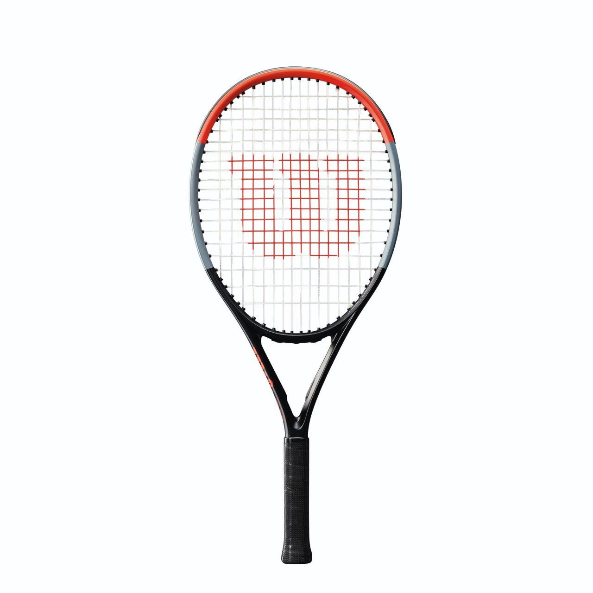
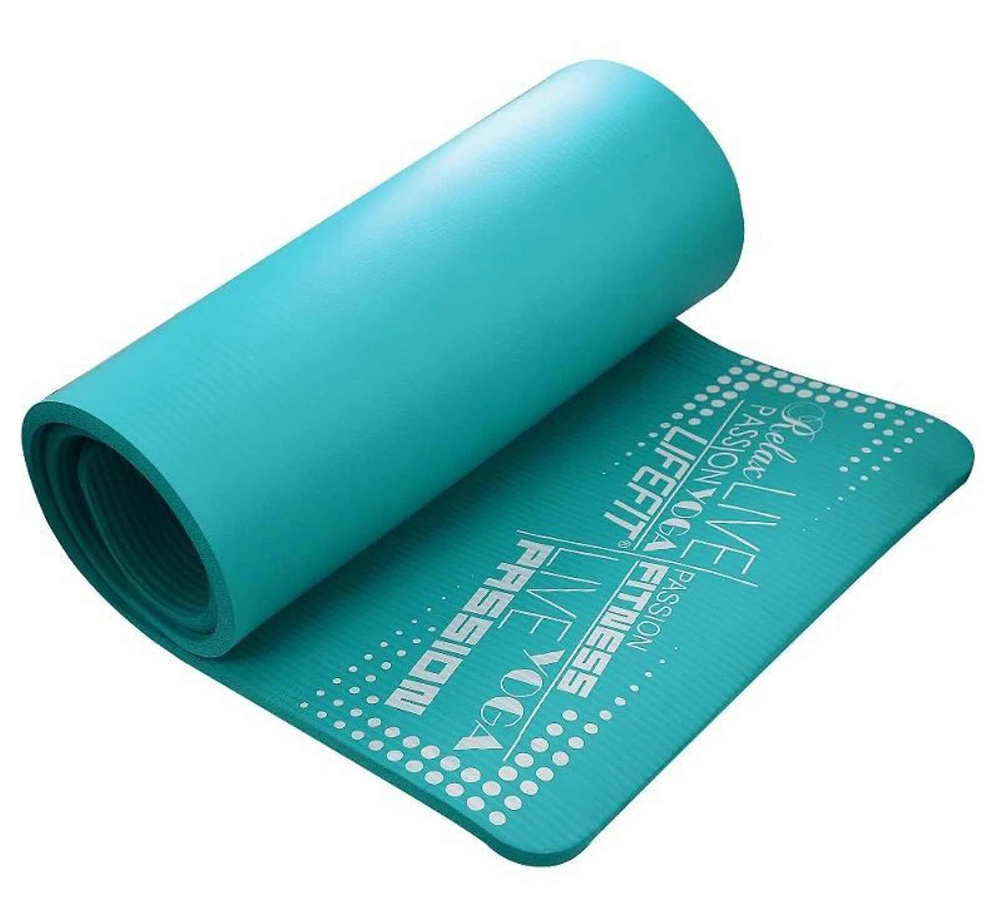
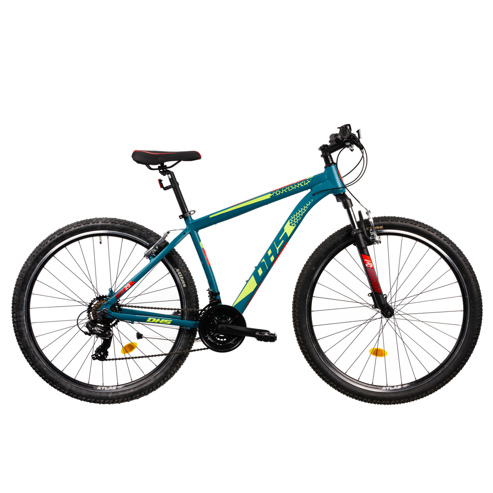

ALERGAT
Alergatul este o activitate fizică ce implică deplasarea rapidă pe jos, fiind una dintre cele mai eficiente forme de exercițiu cardiovascular. Poate fi practicat atât în scop recreațional, cât și competitiv, sub diverse forme, precum jogging, sprint sau maraton. Beneficiile alergatului includ îmbunătățirea sănătății inimii, creșterea rezistenței fizice, arderea caloriilor și reducerea stresului. De asemenea, este accesibil și nu necesită echipamente speciale, în afară de încălțăminte adecvată.

FOTBAL
Fotbalul este un sport de echipă jucat între două formații a câte 11 jucători, având ca obiectiv înscrierea golurilor în poarta adversă. Se joacă pe un teren dreptunghiular, folosindu-se predominant picioarele pentru a controla mingea. Este cel mai popular sport din lume, apreciat pentru dinamismul său, strategiile complexe și spectacolul oferit. Fotbalul dezvoltă abilități fizice precum viteza, rezistența și coordonarea, dar și spiritul de echipă și disciplina.

TENIS
Tenisul este un sport de rachetă jucat între doi jucători (simplu) sau două echipe de câte doi jucători (dublu). Scopul jocului este de a trimite mingea peste fileu în terenul adversarului, astfel încât acesta să nu o poată returna corect. Se joacă pe diverse suprafețe, precum iarbă, zgură sau hard, fiecare influențând stilul de joc. Tenisul dezvoltă agilitatea, coordonarea și rezistența fizică, fiind apreciat atât pentru intensitatea sa, cât și pentru strategia necesară în fiecare schimb de mingi.
YOGA
Yoga este o practică străveche care combină exercițiile fizice, respirația controlată și meditația pentru a îmbunătăți starea de bine a corpului și a minții. Originară din India, yoga include o varietate de posturi (asane) care dezvoltă flexibilitatea, forța și echilibrul, alături de tehnici de respirație (pranayama) ce ajută la reducerea stresului și la creșterea concentrării. Practicată regulat, yoga contribuie la relaxare, îmbunătățește postura și promovează sănătatea mentală, fiind accesibilă persoanelor de toate vârstele și nivelurile de fitness.
CICLISM
Ciclismul este un sport și o activitate recreativă care implică utilizarea bicicletei pentru deplasare, antrenament sau competiție. Poate fi practicat pe șosea, pe teren accidentat (mountain biking) sau pe velodrom (ciclism de pistă). Pe lângă beneficiile pentru sănătate, cum ar fi îmbunătățirea condiției fizice și a sistemului cardiovascular, ciclismul este și un mijloc ecologic de transport. Este un sport popular atât la nivel amator, cât și profesionist, cu competiții renumite precum Turul Franței, Giro d’Italia și Vuelta a España.
